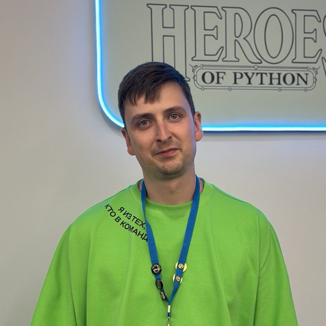

Go vs Python
vs Rust:
три AI-агента пишут один backend

Методика
МОДЕЛЬ
Claude Opus 5.5
ПРОМТ
Один и тот же, отличается только язык: Go, Python или Rust
Go
chi · pgx · squirrel · goose · distroless
Python
FastAPI · asyncpg · Pydantic v2 · Alembic · python-slim
Rust
axum · sqlx · tokio · serde · distroless
Стеки агенты выбрали сами. Rust-агент запущен отдельно, через 9 дней, и работал один на машине.
Хронология
Rust закончил быстрее всех, Go — на 10,6 минуты раньше Python. Ревью — 5–7 минут на каждого.
0 мин
30
60
90
Go
разработка · 73,2 мин
Python
разработка · 83,8 мин
Rust
разработка · 63,9 мин
17.11 12:57
старт Go и Python параллельно
14:10 · 14:21
сдали Go и Python, затем ревью
26.11 17:04
старт Rust, один на машине
18:08 · 18:15
Rust сдал работу, ревью готово
Скорость и стоимость
Python работал дольше всех, но потратил на 30% меньше токенов. Rust — быстрее всех, по цене как Go.
| Метрика | Go | Python | Rust |
| Время разработки | 73,2 мин | 83,8 мин | 63,9 мин |
| Вызовы API модели | 135 | 116 | 119 |
| Сгенерировано токенов | 262 025 | 207 734 | 306 666 |
| Записано в кеш | 684 371 | 508 411 | 388 819 |
| Прочитано из кеша | 29,9 млн | 20,9 млн | 30,6 млн |
| Всего токенов | 30,9 млн | 21,6 млн | 31,3 млн |
| Контекст на финише | 351 тыс. | 289 тыс. | 394 тыс. |
| Стоимость по ценам API* | ≈ $14,7 | ≈ $10,9 | ≈ $14,2 |
−30%
токенов у Python: 21,6 млн против 30,9–31,3 млн
≈32 с vs ≈43 с
средний шаг Go и Rust против Python
Почему Go и Rust быстрее, но дороже: больше шагов (135 и 119 против 116) с более длинным контекстом — отсюда больше токенов. Но шаги короче (≈32 с против ≈43 с): компилятор даёт мгновенную обратную связь, и по часам они заканчивают раньше.
* Прайс Claude Opus 5.5 на ноябрь 2026, за 1 млн токенов: вход $4, генерация $20, запись в кеш $5, чтение из кеша $0,20. В среднем ≈ $0,5 за 1 млн токенов.
Объём кода
Go и Rust длиннее Python на 27–31% в коде: явная обработка ошибок и маппинг строк.
Непустые строки без комментариев; vendor/, .venv, target/ и lock-файлы исключены. У Rust 855 строк встроенных #[cfg(test)] отнесены к тестам.
Файлов исходников
46 .go · 58 .py · 21 .rs
openapi.yaml
Go: 651 строка вручную
Python: 2 996, из кода
Rust: 877 строк вручную
Документация
Markdown: ~11 тыс. строк у Go и Python, ~9 тыс. у Rust
Тесты и проверки
Все три агента довели всё до зелёного. Ревьюеры перезапустили проверки сами и получили те же результаты.
| Проверка | Go | Python | Rust |
| Тесты | 50 функций + 6 подтестов | 139 passed: 70 unit + 69 integr. | 72 passed: 57 unit + 14 integr. + 1 e2e |
| Покрытие | 92,5% | 97,0% | 93,9% |
| Линтеры | golangci-lint, go vet: 0 | ruff, mypy --strict: 0 | clippy -D warnings, rustfmt: 0 |
| EXPLAIN, 1 млн книг | 40/40 без Seq Scan | 40/40 без Seq Scan | 29/29 + generic-планы |
| Повтор у ревьюера | ✓ прошло | ✓ прошло | ✓ прошло |
| Итераций | seed ×3, explain ×5, integr. ×5 | ~7 тесты + 4 производит. | integr. ×5, Docker ×2, план ×4 |
Go и Python: pg_get_indexdef возвращает ON ONLY, индексы после seed оставались пустыми. Оба нашли и исправили сами.
Rust: под нагрузкой generic-план prepared statement делал Seq Scan, обычный EXPLAIN этого не видит. Добавил проверку GENERIC_PLAN.
Производительность
Цифры показательные, но напрямую не сравнимы: разные профили нагрузки и разная загрузка хоста.
Seed: ~6 млн строк
| Go | Python | Rust | |
| COPY | 9,0 с | 15,5 с | 8,0 с |
| Индексы + FK | 33 с | 24,1 с | 9,1 с |
| VACUUM | 25 с | 12,1 с | 15,6 с |
| Итого | ~68 с | 52,0 с* | 33,0 с |
* Python — PGDATA в tmpfs (RAM), Go и Rust — на Docker-томе. Rust работал один на машине; индексы он строит параллельно по партициям.
k6, нагрузка на API
| Go | Go | Python | Rust | |
| Пользователи | 8 | 32 | 64 | 32 |
| RPS | 321 | 365 | 560 | 658 |
| p50 | 5,1 мс | 13,4 мс | 95 мс | 36 мс |
| p95 | 129 мс | 508 мс | 266 мс | 160 мс |
| p99 | 443 мс | 1 526 мс | 412 мс | 260 мс |
| Ошибки | 0% | 0% | 0% | 0% |
Хост Go был перегружен (load average 20–190), Python гонял БД в RAM. Хвосты p95/p99 у всех упираются в /search и CPU; Rust-агент поднял RPS с 215 до 658, переписав поиск.
Эксплуатация
DOCKER-ОБРАЗ
16 · 40 · 255
МБ: Go · Rust · Python
distroless static и distroless cc против python-slim + venv
Общее у всех
Multi-stage, non-root, healthcheck
Отдельные сервисы migrate и seed в compose
/healthz, /readyz, /metrics, JSON-логи
Ошибки RFC 7807, X-User-Id через middleware
Различия
Go: vendor/ для офлайн-сборки, линтер в Docker
Python: OpenAPI из кода; make test требует uv на хосте
Rust: тесты в контейнере rust:1.100, cargo на хосте не нужен
DevEx vs Security
Python: интерпретатор в контейнере — hotfix, дамп данных и скрипты без пересборки. Но это лишняя поверхность атаки.
Go и Rust (distroless): нет даже shell — максимум безопасности и минимум размера. Но любое вмешательство — пересборка и перевыкат образа.
Rust: третий участник
Тот же промт и та же модель. Лучшая оценка ревьюера и самый быстрый агент, но не без багов.
ОЦЕНКА РЕВЬЮЕРА
8,35
Go 8,0 · Python 7,8
ВРЕМЯ АГЕНТА
63,9 мин
Go 73,2 · Python 83,8
Что получилось
Тесты: 72/72, покрытие 93,9%, clippy и rustfmt без замечаний
Seed 33 с, k6: 658 RPS, p99 260 мс
Образ 40 МБ, distroless, non-root
Ревьюер по критериям
ТЗ 9 · тесты 9 · код 9 · OpenAPI 9
корректность 8 · эксплуатация 8
масштабируемость БД 7 — как у Go
Что нашёл ревьюер
Ошибка 500 при пагинации авторов с датой рождения до н. э.: курсор хранит «-0427-01-01», PostgreSQL не принимает это как date
Редкое значение фильтра вместе с сортировкой проходит весь индекс: ~1 с на 1 млн книг, на 10 млрд — таймаут
64 партиции и FK в book_authors — слабо для 10 млрд и будущего шардинга
Мини-задачи: условия и результаты
Три небольших скрипта, одинаковые ТЗ и данные. Обе реализации каждой задачи прошли скрытую проверку.
| Задача | Время, мин | Токены, млн | Стоимость, $ | Код, строк | Проверка |
| Excel → графики 400 «грязных» строк, 5 PNG + отчёт | 6,7 / 22,2 | 1,65 / 5,0 | 1,68 / 3,10 | 810 / 1 429 | 75/75 · 75/75 |
| Рассылка по расписанию cron, таймзоны, повторы SMTP | 12,7 / 11,4 | 2,69 / 2,53 | 2,17 / 2,27 | 984 / 1 331 | 11/11 · 11/11 |
| Мат-фильтр на regexp обход маскировки, без ложных | 11,9 / 13,7 | 2,30 / 2,30 | 2,20 / 2,43 | 477 / 707 | F1 0,983 / 0,992 |
| Итого | 31,3 / 47,3 | 6,64 / 9,83 | 6,05 / 7,80 | 2 271 / 3 467 | Go: +53% кода |
В ячейках: Python / Go. Скрытые проверки агенты не видели: эталонный summary.json (75 значений), 11 проверок писем через API Mailpit, 120 размеченных фраз. Стоимость — по прайсу Claude Opus 5.5. Мини-задачи решали только Go и Python.
Мини-задачи: что повлияло
Разницу делает не язык как таковой, а готовые библиотеки под задачу.
Excel: Python в 3,3 раза быстрее и в 3 раза дешевле
openpyxl и matplotlib закрыли задачу «из коробки»: 29 вызовов инструментов, 6,7 минуты
В gonum/plot нет кольцевой диаграммы, Go-агент рисовал её сам. Плюс паника на пустых данных и ручная вёрстка подписей: 67 вызовов
Минус Go из-за окружения: локальный golangci-lint несовместим с go1.27
Рассылка: паритет · Мат-фильтр: Go чуть точнее
Оба сервиса прошли 11/11 проверок. Go-агент нашёл у себя гонку благодаря go test -race
В regexp Go (RE2) нет lookahead/lookbehind, агент проверял слово целиком — и всё равно поймал «бл@ть», которое пропустил Python
Скорость фильтра: Go ~220 тыс. строк/с, Python ~75 тыс.
Исследования: за Python
Почему AI-агенту в среднем проще писать на Python: публичные данные 2022–2026.
Больше обучающих данных
The Stack v2 после дедупликации: Python — 233 ГБ, Go — 55 ГБ, в 4,3 раза меньше. В v1: 80 против 35 ГБ.
Выше доля решённых реальных задач
Multi-SWE-bench (NeurIPS 2025): Python и Java обгоняют Go и Rust. SWE-bench Multilingual: на Go решено 31% задач.
Меньше токенов на решение
Менее популярные языки стоят дороже Python при той же доле успеха. С Claude Code Python экономнее в 6 из 12 задач, Go — в 3.
Бенчмарки заточены под Python
HumanEval, MBPP и SWE-bench изначально только на Python. Это одна из причин разрыва по Multi-SWE-bench.
Исследования: за Go
Где Python уступает: ошибки, которые компилятор ловит до запуска, и проблемы экосистемы.
Типы ловят основные ошибки LLM
94% ошибок компиляции в коде от LLM — провалы проверки типов (PLDI 2025). В Python они всплывают только при запуске.
Компилятор как страховочная сетка
Google: статическая типизация Go — «страховочная сетка для агентного кода». Плюс быстрая сборка, gofmt и «один способ».
Устаревшие API в Python-библиотеках
Модели берут устаревшие API в 25–38% случаев (ICSE 2025). Гарантия совместимости Go 1 это смягчает (наш вывод).
Выдуманные пакеты
19,7% пакетов, рекомендованных моделями, не существуют (Python и JS). Модули Go привязаны к URL и go.sum.
Слабые места Go для агентов: многословность (больше кода и токенов) и гонки данных — 41% гонок в Go-коде Uber — захват переменной в горутине, компилятор их не ловит (PLDI 2022).
Сверка с нашим экспериментом
Часть выводов исследований подтвердилась, часть — нет: сильная модель 2026 года сокращает разрыв.
| Тезис из исследований | Что увидели мы | Совпало? |
| На Python агент тратит меньше токенов | Python: 21,6 млн, Go: 30,9 млн (+43%) | да |
| На Go код многословнее | Код Go на 27% длиннее, тесты — на 47% | да |
| На Go и Rust агенты справляются хуже | Оценки: Rust 8,35, Go 8,0, Python 7,8. Rust и Go закончили раньше Python | нет* |
| Типы ловят ошибки до запуска | Ошибки 500 на граничном вводе нашли у Python и у Rust (даты до н. э.). У Go — логическая ошибка лимита курсора | частично |
| У Go проще эксплуатация | Образы: Go 16 МБ, Rust 40 МБ, Python 255 МБ | да |
* Бенчмарки 2024–25 мерили более слабые модели на чужих репозиториях. У нас новый проект с нуля, одна модель и n = 1, поэтому вывод предварительный. Источники — experiment/RESEARCH.md.
Почему Python удобнее для MVP
На этапе MVP скорость изменений и простота отладки важнее размера образа и задержек.
Читаемый и короткий код
Нет if err != nil и ручного маппинга. Код на 27% короче, его легче читать на ревью.
Интерпретатор в контейнере
Любой скрипт или REPL без пересборки образа. В distroless-образе Go нет даже shell.
Быстрый цикл правок
Нет компиляции: правка → результат за секунды. Сервер перезапускает uvicorn --reload.
OpenAPI и валидация из коробки
FastAPI и Pydantic генерируют Swagger из кода. Go-агент писал YAML вручную.
Python — lingua franca AI
LLM-SDK, векторные БД и RAG — нативно. В Go часто нужен glue-code или отдельный сервис на Python.
Проще найти людей и помощь
Python в двойке самых популярных языков GitHub, и у моделей на нём больше данных.
Когда переходить на Go или Rust: MVP подтвердился и упёрся в производительность, память или размер образа.
Выводы
1
Язык почти не влияет на результат
Оценки 8,35 · 8,0 · 7,8, архитектура совпадает. Решают модель и ТЗ.
2
Компилятор быстрее, Python дешевле
Rust и Go на 13–24% быстрее, Python на 30% дешевле по токенам.
3
Мелкие скрипты — за Python
С готовыми библиотеками (Excel, графики) в 3 раза быстрее и дешевле.
4
У Go и Rust — плюсы эксплуатации
Образы 16 и 40 МБ против 255 МБ. У Rust лучшие seed и RPS.
5
Python сильнее в тестах и типах
Покрытие 97%, mypy --strict, OpenAPI из кода с тестом на расхождения.
6
Ревью обязательно
Все трое отчитались «всё зелёное», ревьюеры за 5–7 минут нашли баги с 500.
7
10 млрд — с оговорками
Поиск одним PostgreSQL не масштабируется. Все трое вынесли это в документацию.
8
Critical mass — за Go и Rust
На MVP выигрывает Python. С ростом команды и инвариантов типы и компилятор окупаются: меньше runtime-ошибок, быстрее рефакторинг.
Как сделана презентация
Оба варианта, .pptx и HTML, собирает один скрипт на Python из общего описания слайдов.
ЯЗЫК
Python 3.12
СКРИПТ
experiment/deck/build.py
~800 строк: описание 17 слайдов и два рендерера, в PowerPoint и в HTML
| Библиотека | Версия | Зачем |
| python-pptx | 1.0.2 | слайды, таблицы, диаграмма, заметки |
| lxml | 6.0.2 | правка XML темы и маркеров списков |
| Pillow | 12.3.0 | вставка фото на титул |
| XlsxWriter | 3.2.9 | данные нативной диаграммы |
| typing_extensions | 4.15.0 | зависимость python-pptx |
| стандартная | — | html, pathlib, sys: HTML-версия |
HTML-версия — без внешних библиотек: шаблон и листание на чистом JavaScript.